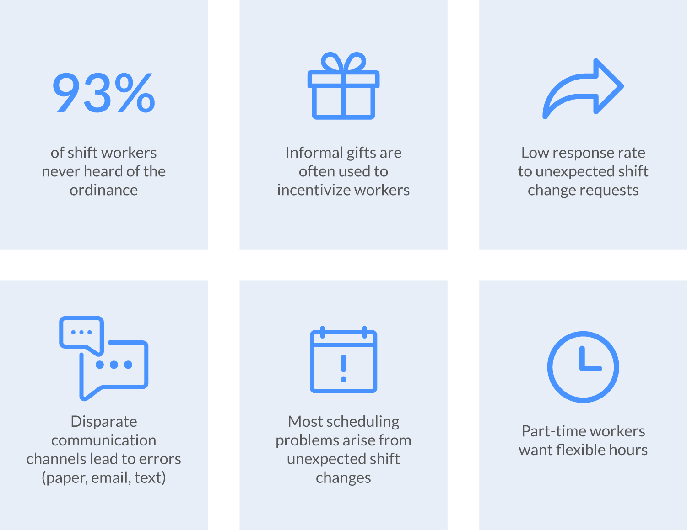
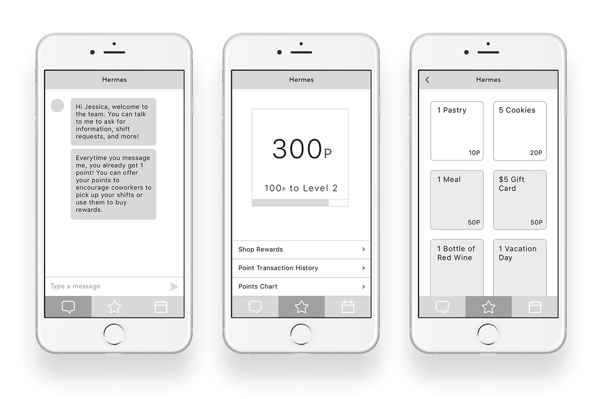
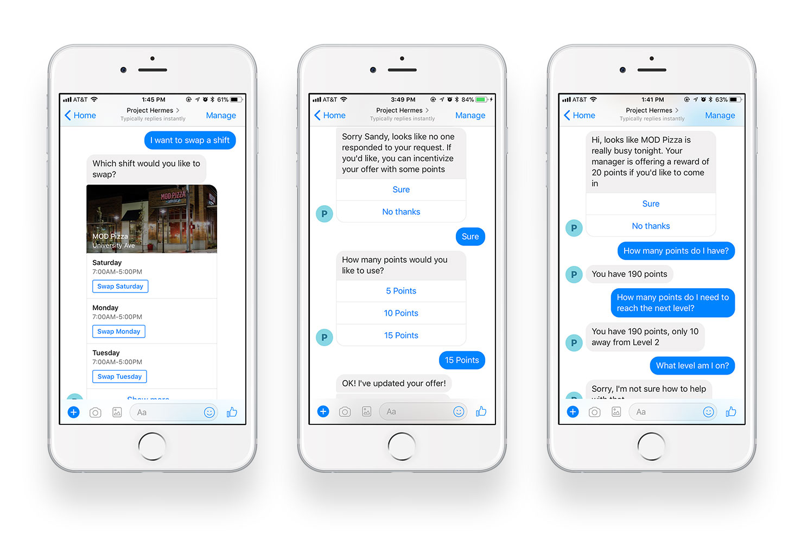
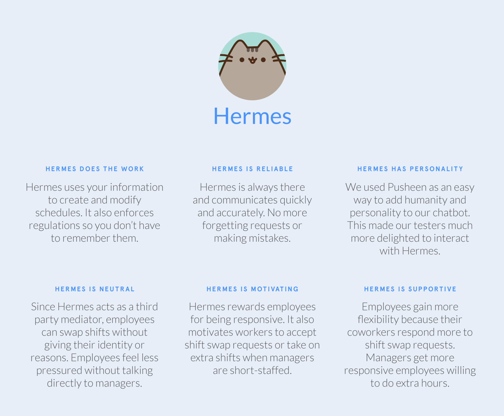

Hermes
Team
Blake Tsuzaki (Engineer), David Mondello (Project Manager/Researcher), Issac Zheng (Designer)
My Role
Interviews, survey, ideation, sketching, prototyping, and evaluation
Process
10 weeks for interviews, survey, competitive analysis, personas, ideation, sketching, prototyping, usability, and evaluation
Design Question
How might we improve communication between shift workers and their managers when developing and modifying schedules?
Research Findings
We conducted 5 user interviews with our stakeholders, including shift workers, managers, and an OLS representative. We also created a survey each for the manager and shift worker, with about 50 respondents total.
Persona Development
Using our research, we created two primary personas for the manager and the shift worker. We mapped out the characteristics we found by plotting each of our user interview participants on different scales.
Casey, Manager
“Being a manager is challenging and rewarding. I want to focus on managing the business and not the details of scheduling while also protecting my workers’ privacy.”
Luna, Shift Worker
“I got this job so that I could support myself and learn valuable skills while being a full-time student. I like being in control of my schedule and working flexible shifts.”
Ideation
We started our ideation process by creating specific design questions we found from our research and brainstormed ideas for each of them. Then we used affinity diagramming to organize our ideas.
Brainstorm & Affinity Diagram
Sketching
We sketched out our ideas and selected the top 3 that most addressed our perona's needs and stood out against our competitive analysis. We combined these 3 ideas and imagined a system that...
Self-Scheduling
...lets workers create their own schedules. Shift workers want independence and flexibility most of all. Being able to choose preferences for when they work would address that need.
Reward System
...rewards workers for being responsive. Both employees and managers that want unexpected shift changes would be supported with the ability to incentivize their coworkers.
Chatbot
...automates scheduling needs with a chatbot that handles all logistics between workers. This bot is also a neutral actor that can anonymize shift swaps and enforce regulations, increasing trust and comfort.
Prototyping
I designed the low-fidelity prototype of the reward UI using Sketch and Marvel App, while my teammate built a prototype Facebook Messenger bot using Wit.ai. We tested these two interfaces for 4 use case scenarios with 5 users.
 Usability Test Findings
Challenges
- Introducing Bot
- Introducing Reward System
- Fair Reward System
- Difficulties of Text Format
Successes
- Combination of Bot & App
- Chatbot Quick Replies
- Increased Trust
- Increased Flexibility
Based on our test findings, we added more quick replies to the bot to guide the user and give suggestions. We also combined the chatbot and reward app into a single interface to unify the concept.
What does Hermes do?
Luna just started as a shift worker at Mod Pizza. She asks Hermes for her schedule and Hermes offers suggests options of what she can ask, so Luna chooses to learn about points. Hermes explains how to earn points and why they are useful by offering to show her some rewards.
After accumulating some points, Luna wants to swap a shift with a coworker. She tells Hermes, and Hermes searches for a swap. After having some trouble, she offers 5 points to any coworker that accepts the swap. She is glad that someone accepted her offer and she now has a free Saturday.
Luna wants to buy herself a treat using her points. She browses the rewards and buys a pastry that costs her 5 points.
Luna gets a message from Hermes and sees that she can get 20 points for picking up an extra shift. She wants to reach Level 2 to get more rewards, so she accepts.
What I learned
I learned how to scope down ideas into a solution that targets our persona and considers the competitive landscape. Working in a class team project also sharpened my project management skills. This project opened my eyes to the possibilities of using chatbots as a solution.
Further Development
Because of time constraints, we did not create a self-scheduling scenario and we focused more on the shift worker rather than the manager. We need to build out the manager’s side and create scenarios for enforcing regulations and creating schedules.